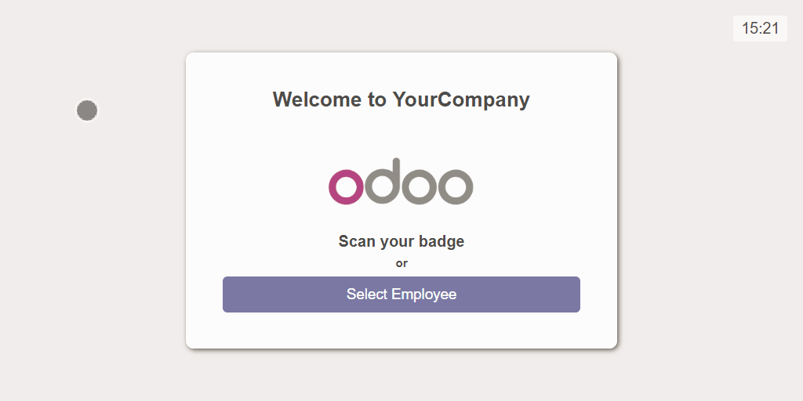

Full Production Quantity Tracking by Employee
The module provides visibility to production efficiency by employee.

Workorder Quantity by Employee Management application extends Odoo’s labor reporting functionality by providing the capability to capture manufacturing produced quantity data by Work Order by Employee. The app allows to link Employees to one or more Work Centers and set up a Kiosk mode screen on the Shop Floor for Data capture.
PIN security can be enabled for Employees logging in. Once the Employees are logged in, the system displays only the Work Orders scheduled on the Work Centers linked to the Employee.
Produced quantity is reported by choosing the Work Order Kanban card from the board and entering produced quantity on a touch-friendly number keypad.
Captured Data can be reviewed through the Manufacturing Order or a dedicated report available in List View and a Pivot Table or Exported to Excel or CSV for further analysis.
1. A new menu section "Produced Quantities Manager"
A new menu section is added to the Manufacturing module listing all the new menu options.
2. Kiosk mode screen
Kiosk mode screen is created allowing Employees from Shop Floor to log into the system and enter produced quantities on a Work Order. Produced quantity is entered on a touch-friendly number keypad, enabling to use tablets for data entry.
Kiosk mode displays only the Work Orders scheduled on the Work Centers linked to the Employee.
3. Produced Quantities
This tab is added to Work Order screen allowing to review data captured for this Work Order.
4. Report
A new dedicated report – Produced Quantities is added to review produced quantities by Employee available in List View and a Pivot Table.
5. Shop floor Dashboard
A new full screen Work Orders Dashboard View is added to display production plan on the Shop Floor. The view displays scheduled Work Orders in Kanban view. Kanban cards display the following:
* Work Center
* Product
* Quantity made
* Quantity left to do
* Manufacturing Order
* Status